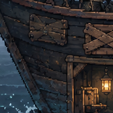
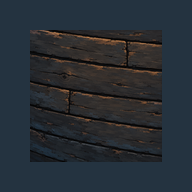
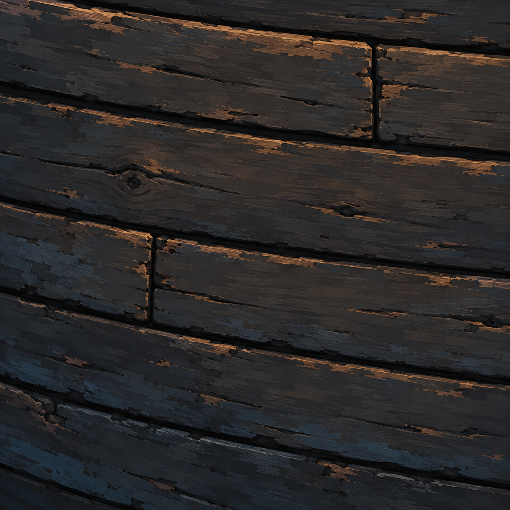
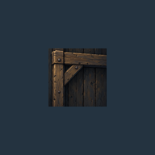
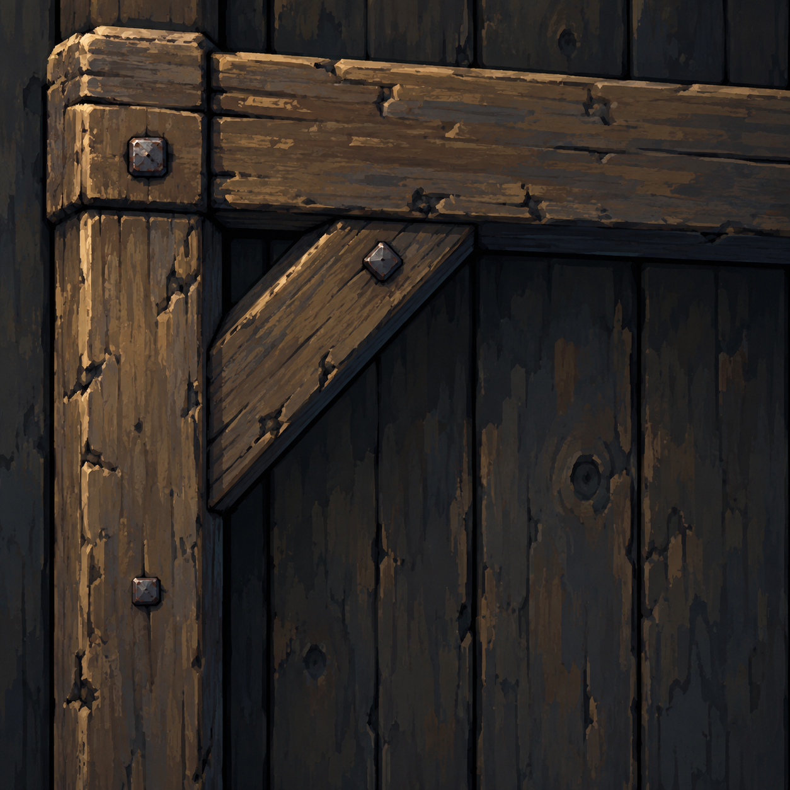
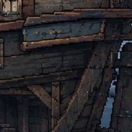
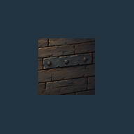
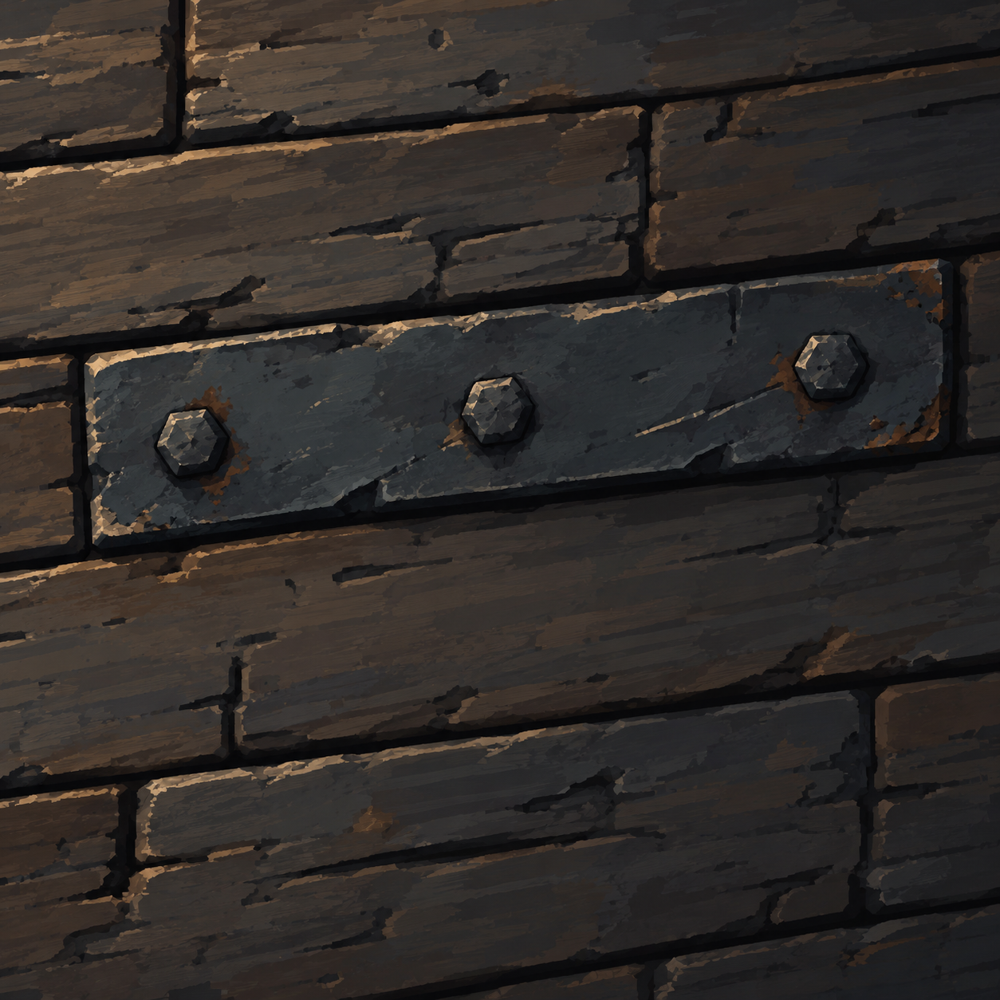

以浏览器100%缩放查看。左图为定稿原生192×192像素裁切，右图为按构件宽度估测缩放后置入192×192窗口的样板：旧木132px、梁柱72px、铁件81px。分别参照约20px板高、15px梁厚、19px铁条宽。该校准为目视估测，需人工复核，不是几何验收数据。裁切仅用于评审。








审核重点：灰褐/蓝灰基调、结构边粗细变化、笔触服从板材、小范围锈蚀与暖光。当前三个样板均为 REVIEW；用户批准前，v007整船映射关闭。